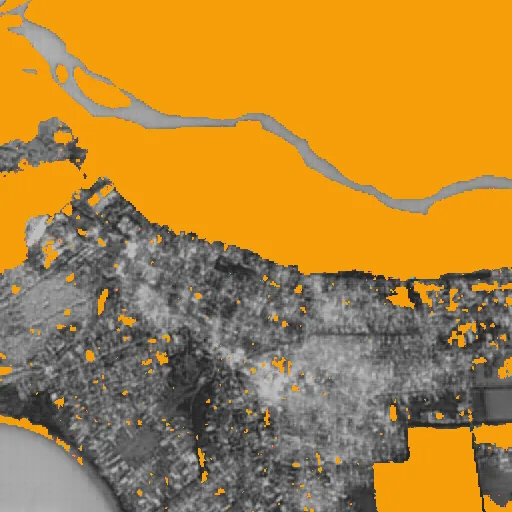
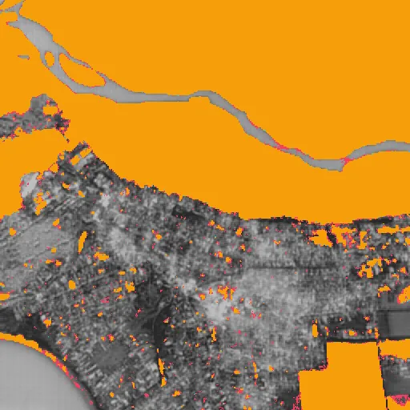
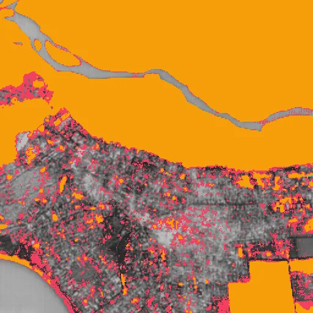
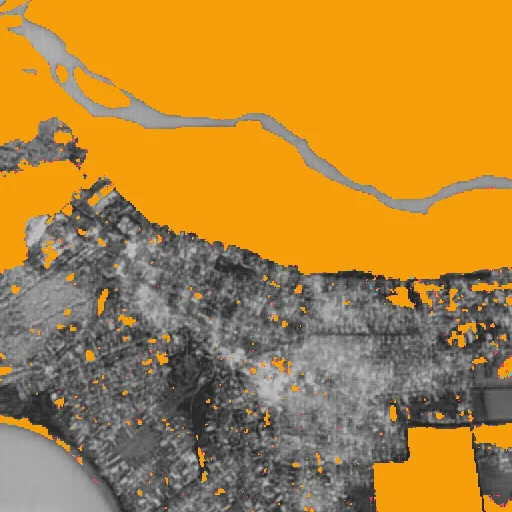
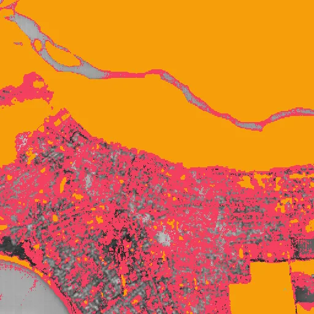
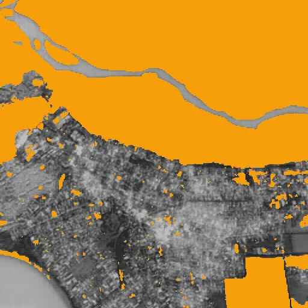
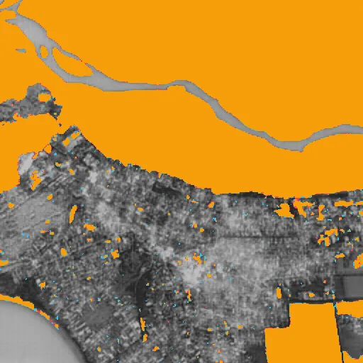
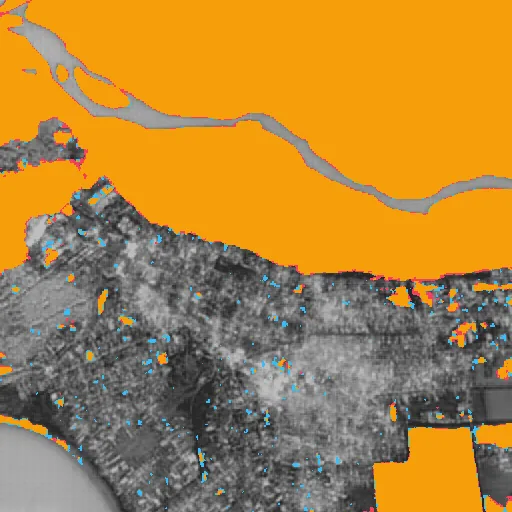

Benchmark / Use cases / Change detection / Results / change-04
change-04
Compression ratio and change_iou
Each point is a bound on the root-mean-square error, written next to it in codes of the quantised embedding, on this sample.
GeoZL PIVCOGeoZL PFORJPEG XL
Decoded change maps
The result on the compressed copy at each error bound, in codes of the quantised embedding.changed on bothlostnew
GeoZL PIVCO

RMSE ≤ 1 codes, measured 0.817
4.4× · change_iou +0.995 RMSE ≤ 2 codes, measured 1.73
RMSE ≤ 2 codes, measured 1.73
6.3× · change_iou +0.989
RMSE ≤ 4 codes, measured 3.75
9.9× · change_iou +0.960
RMSE ≤ 8 codes, measured 7.76
16.4× · change_iou +0.817 RMSE ≤ 16 codes, measured 15.5
RMSE ≤ 16 codes, measured 15.5
29.0× · change_iou +0.616GeoZL PFOR
 RMSE ≤ 1 codes, measured 0.817
RMSE ≤ 1 codes, measured 0.817
2.9× · change_iou +0.995
RMSE ≤ 2 codes, measured 1.73
3.6× · change_iou +0.989 RMSE ≤ 4 codes, measured 3.75
RMSE ≤ 4 codes, measured 3.75
4.7× · change_iou +0.960 RMSE ≤ 8 codes, measured 7.76
RMSE ≤ 8 codes, measured 7.76
7.0× · change_iou +0.817
RMSE ≤ 16 codes, measured 15.5
12.4× · change_iou +0.616JPEG XL
RMSE ≤ 1 codes, measured 0.983
5.7× · change_iou +0.994
RMSE ≤ 2 codes, measured 1.99
12.4× · change_iou +0.989
RMSE ≤ 4 codes, measured 3.95
36.6× · change_iou +0.977 RMSE ≤ 8 codes, measured 6.82
RMSE ≤ 8 codes, measured 6.82
112.7× · change_iou +0.959
RMSE ≤ 16 codes, measured 6.82
112.7× · change_iou +0.959